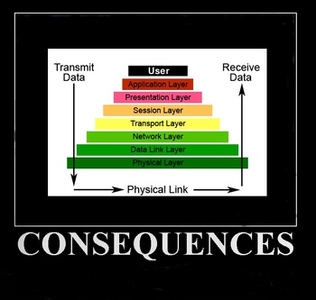

Linux Layer 8 Security
By Lisa Kachold
Linux users and system administrators are often unable to sufficiently focus on general system changes, log data, and tracking what they did and when to detect if their systems have been encroached upon.
Not all of us can afford an in-line Layer 7 switch, Cisco ASA, or IDS. During escalated security events, it takes time to set up, e.g., Snort - which does not detect all encroachments. (See Matahari, below.) Additionally, production systems are often under high change control, or utilized so fully that their CPU/memory capacity is unable to field additional daemons.
Snort
Snort can be quickly set up via Live CD, Backtrack, DVL, or other security tools. A Snort tcpdump can be taken during off-peak hours for import and full rules-check against a variety of aggressive Layer 4-7 de-network engineering attempts:
http://www.freeos.com/articles/3496/
Snort doesn't always see all possible security exploits, however. While it will evaluate packet traffic in the upper OSI layers, it will miss backdoors, and binary rootkits. It will also miss shell or SSH access from past disgruntled staff, unauthorized employees, and other admins or users.
Quick Keyloggers
Keyloggers can be a quick honeypot addition, as you evaluate deeper-level kernel, network, disk, and binary veracity after a suspicious security event.
CERT recommends that any suspect server be rebuilt, but system administrators are often remiss in obtaining proof, right up until "pwnership" creates escalated reactivity where uptime is only a dream. Every one of us knows that ownership is equated to stability in America, right?
http://www.cert.org/tech_tips/win-UNIX-system_compromise.html
Not all that glitters is gold, however: keyloggers can act as a part of a honeypot, be a component of PCI compliance, part of Sarbanes-Oxley (SOX) audit tools, change management or system administration utilities - or be a part of Trojan viruses. Certainly, a great deal of system penetration and changes are done without using a shell (e.g., webmin, sftpd, httpd/DAV writes, and low level binary trojans - see Snort or Autopsy).
It's becoming more and more common to log all root keystrokes in layers of trust and secrecy that users, developers, and even system administrators don't immediately recognize.
The three most often deployed keyloggers in Linux systems include:
1) PAM Daemon Systems Level
While PAM hacking and modifications is a whole subject in and of itself, various keyloggers can be deployed using PAM. The "rootsh" utility - which allows you to enable a systems logger that will show everything logged to the terminal whenever anyone invokes sudo or logs in as a user - is a great immediate solution.
http://freshmeat.net/projects/rootsh/
General implementation recommendations include renaming "rootsh" to another seemingly innocuous sounding word - like "termd".
"rootsh" is immediately useful, especially if you have more than one system administrator or root user (although you should always disable root access completely in favor of logged sudo).
It's often too late when we realize that our sudoers file was not configured to be limited to only a select list of users, or was not logging (e.g., if we have inherited 200 machines installed with stock sudo -- see my August 2009 Linux Gazette "Layer 8 Linux Security" column on maintaining sudo via Puppet). So, perhaps it went unnoticed that a past disgruntled developer was accessing the system from his desktop via RDP to SSH and accessing root regularly via 'sudo su'.
In startup ISPs and Web development shops in the mid-1990s, a "Nazi" Linux security administrator would often tire of being on-call 24x7 in an uncontrollable server farm, and come down with the avant-garde edict of "no shared root access", whereupon all developers just took escalated access via escaping system calls from emacs or vi, or via buffer overflows, and happily changed the access passwords for users: games, haldaemon, adm, lp, or sync. Similar shops and Linux un-professionals still exist, unfortunately.
Since any access to root via sudo can result in changes (and potential errors), a good keylogger makes a lot of sense as an easily setup secondary tracking mechanism.
PCI compliance and SOX both require controls in place for the root or administrative user. However, when mixed with corporate profit, these controls are loosely interpreted to the point of complete insecurity. If we cannot track change, we control nothing. Implementing a keylogger will take no more than fifteen to thirty minutes (and can easily be automated through Puppet), so if you suspect your systems of being accessed and the logs being wiped, or if you don't have the time to fully evaluate all binary checksums for rootkits, keyloggers can be a good immediate additional security tool.
By default, 'rootsh' logs to /var/log/rootsh/ (which can be changed during setup). Of course, 'rootsh' logs can be edited, like any logs, unless you use 'syslog-ng', or stunnel loghost or cron-based e-mail log burst, so hide them well. You will generally find that no one even notices that 'rootsh' is logging, and happily carry on as normal.
2) Kernel level keyloggers
You might not have a Honeywall server, but Sebek clients (with Honeywall servers) provide nearly invisible logging capacity for honeypot and system administration monitoring.
"http://www.honeynet.org/tools/sebek/>
Sebek is a kernel module that is also available for Windows machines.
Honeywall and other honeypots can be set up to poll selectively. They can be moved in during the middle of the night, and can be set up with clients to your servers, from a Live CD/DVD, via VM or Xen virtualization. They should definitely be included as an adjunct to your disaster recovery plan/stack.
http://www.honeynet.org.es/papers/vhwall/
http://www.jessland.net/JISK/Honeypots/Tools.php
Too late to plan, can't change extensive system networking or add kernel mods? Configure honeymole:
http://www.honeynet.org.pt/index.php/HoneyMole
3) Hardware based keyloggers
These masquerade as USB-to-PCI or other conversion tools, and are most often deployed at NOCs with KVMs.
"http://www.keelog.com/download.html
Hardware-based keyloggers are especially useful in that they work across platforms, provide nearly instant results, and can be reused. However, the most-savvy system administrators usually see the terminal pause and flash that accompany use of a hardware logger on a KVM. But it's possible that someone accessing your NOC via keyboard/console after a quick lock pick (certainly, no one will ever verify the cameras -- those only retain 3 days of footage) or logging into your systems before rifling your cabinets won't notice your keyloggers at all.
Neither "find -mtime", nor careful evaluation of all processes, nor even a stack trace will ever see a hardware key; even really astute hackers with well-honed senses often cannot even determine the source in hardware keyloggers.
The legal ramifications of micro-critiquing a system administrator or engineer for making general typing mistakes are problematic due to the non-exempt Federal statutes for professionals (since the FLSA standards require us to be able to work without micro-direction) - but be advised that all high-level responsible actions are logged post-2001 in America. While setting up your keyloggers, don't be surprised if you discover management or security have deployed one of their own.
Even at the application Web layer, many large online providers deploy Akamai caching. Federal security monitoring includes Akamai integration with various pipe taps, gleaning databases of packet and user access for individuals "of interest" (cross-matching e-mail or other authentication cookie info) across cellphone, cable, and dial-up Internet. Monitoring information equals power in small and large systems across all OSI layers.
Trojan Keyloggers
Trojan keyloggers are extensive in variety, attack vector, and application, from those used by the FBI to log mob boss encryption PGP passphrases, to browser-based plugins. They include XSS tunnels, LivePerson, etc., and are all trivially deliverable via Sharepoint, GMail, Yahoo, or other Web-based e-mail, in HTML/Javascript or URI/UTF-8, PDF, JPG, Word/OpenOffice, or other executable "attack-ments".
http://www.cert.org/tech_tips/securing_browser/
[ Much of the above is not trivial by any means, or even possible in most situations, especially if you're running Linux; some of the attack types listed here (e.g., keylogger delivery via JPG) exist only as concepts. It is, however, worth noting that new attack methods are discovered constantly, that a lot of money is being pumped into attack development daily, and that any active (i.e., executable) attachment should be regarded with extreme suspicion. -- Ben ]
Other Tools
Matahari
Matahari is designed to provide a basic non-interactive shell on remote systems behind firewalls. It is intended for use by system administrators who may need some emergency backdoor to access a firewalled machine.
Once you set up the script on the target machine (namely, the client) it begins trying to retrieve commands from the master machine (the server). The time between periodic requests (polls) can be configured to suit different needs, ranging from low latency (frequent polls) to stealthier behaviors.
All traffic between target and master machine is made through HTTP GET/POST requests and their corresponding responses, traversing firewalls as standard outgoing Web traffic. Optional IDS-evasion techniques can be used in special scenarios where a backdoor should remain totally undetected by firewall administrators.
Matahari.py's HTTP port is configurable; Snort and many IDSes do not intercept Matahari packets. The script must be set up on both sides, and is available on Backtrack (KDE --> Maintaining Access --> BackDoors and Rootkits), or from here:
http://sourceforge.net/projects/matahari/files/matahari/0.1.25/
Suspect your server has been compromised? Watch for rogue Python processes (renamed to something that sounds perfectly believable like "updatd") and/or Matahari running from anacron (which is often left enabled yet ignored) that opens scheduled tunnel access.
Turn the tables! Matahari is also exceptional as an administrative security honeypot tool to watch a compromised server for information-gathering purposes without the crackers catching on, should you not want to possibly expose additional systems like a logserver, and have limited setup time.
Matahari usage:
If you have a target machine (target.freemoney.com) behind your firewall, and want to be able to execute commands from a master machine (master.obnosis.com):
# On the target machine: ./matahari.py -c master.obnosis.com -T polite
Use nohup and screen, to be sure process still runs after log off.
# On the master machine: ./matahari.py -s target.freemoney.com
Reference: http://matahari.sourceforge.net/
dd
Always take a 'dd' (a disk image created by the 'dd' program) for analysis in Autopsy, available from the Backtrack Live CD tools. A terabyte USB disk or NAS/SAN makes disk imaging easy.
Depending on the event in question, a complete security evaluation/audit might be required to determine the attack vector and to mitigate the risks. This should take precedence over forensics, once the first sign of proof is found. In an active attack situation, failing to act is an act leading to fail. Any recovery model that mandates simply rebuilding without identification of application-layer issues, physical security issues, or acceptable use/change management policy holes will leave you destined to rebuild regularly and often, or wear the "security issue" blinders and consistently walking away from obvious signs of encroachment.
Most users, developers, and system administrators find it trivial to rebuild and harden a system, then 'dd' its pristine state to a backup archive before ever bringing it up, so they can restore state as necessary - assuming that such an archive exists.
Any system use model that includes an easy rebuild window is a secure model. Backing up important files is required for users, developers, and administrators alike. Puppet or cfengine can reconfigure a system swiftly, while kickstart/jumpstart can provide network-based rebuilds using seed files.
The Take-Home
The single greatest security problem today is ignoring danger or failing to look for proof when faced with questionable events or evidence. All users, developers, and administrators hold direct responsibility to identify, report, prove, and resolve all areas where secure processes break down across any of the OSI layers.
References:
Keyloggers: "http://en.wikipedia.org/wiki/Keystroke_logging#Remote_access_software_keyloggers
Matahari: http://thewifihack.com/blog/?p=58
Snort: http://freshmeat.net/projects/snort/
Talkback: Discuss this article with The Answer Gang
Lisa Kachold is a Linux Security/Systems Administrator, Webmistress, inactive CCNA, and Code Monkey with over 20 years Unix/Linux production experience. Lisa is a past teacher from FreeGeek.org, a presenter at DesertCodeCamp, Wikipedia user and avid LinuxChix member. She organized and promotes Linux Security education through the Phoenix Linux Users Group HackFEST Series labs, held second Saturday of every month at The Foundation for Blind Children in Phoenix, Arizona. Obnosis.com, a play on a words coined by LRHubbard, was registered in the 1990's, as a "word hack" from the Church of Scientology, after 6 solid years of UseNet news administration. Her biggest claim to fame is sitting in Linux Torvald's chair during an interview with OSDL.org in Oregon in 2002.